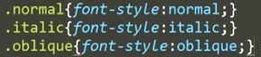
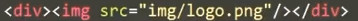

字体和文本样式
元素中的文本布置在元素的内容框中，以内容区域的左上角作为起点 (或者在 RTL 语言的情况下是右上角)，一直延续到行的结束部分。实际上，文本内容表现得像行内元素：在一行显示，直到一行排满才会换行。
字体样式: 作用于字体的属性，会直接应用到文本中，比如使用哪种字体，字体的大小是怎样的，字体是粗体还是斜体，等等。
文本布局样式: 作用于文本的间距以及其他布局功能的属性，比如，操控行或字之间的间距，以及在内容框中文本如何对齐。
注意：下面介绍的样式不能让你将文本其中一部分选中或添加样式，如果你要这么做，必须要用适合的元素来包装它们，比如 <span>或者 <strong>, 或者使用伪元素，像::first-letter (选中元素文本的第一个字母), ::first-line(选中元素文本的第一行), 或者 ::selection (当前光标双击选中的文本)
任务目标：了解在网页上设计文本所需的基本属性和技术。
字体样式（所有属性都可继承）
font 简写属性，简写属性可能会由于属性值顺序（层叠）而覆盖前面的属性值。
font 简写属性在一个声明中设置所有字体属性。
可以按顺序设置如下属性：
● font-style 字体风格，如斜体和倾斜
● font-variant 字体变形
● font-weight 字体粗细（字重）
● color 字体颜色
● font-size 字体大小
● line-height 行间距
● font-family 字体系列（字体族）
font-size 和 line-height 属性之间必须放一个正斜杠。
1、字体风格属性（font-style属性）
一些不常用的字体，或许就只有个正常体，如果你用italic，就没有效果了,这时候就要用oblique。所以italic是使用文字的斜体，oblique是让没有斜体属性的文字倾斜。
italic: 如果当前字体本身没有斜体属性，会选用倾斜（oblique ）替代。italic一般是书写体（cursive ）的样式。斜体是为了倾斜的角度和文本的美观与易读。对汉字来说，斜体一般都是没有必要的。
举个栗子：若 font-family: Microsoft YaHei, sans-serif 时指定 font-style: italic，因为微软雅黑没有 italic 或 oblique 变体，浏览器只得将 regular 变体倾斜以自动合成仿 oblique。



2、字体变形属性（font-variant属性）
主要用于定义小型大写字母（small-caps），使小写字母变成小型的大写字母。


3、字体颜色属性（color属性）
设置选中元素的前景内容的颜色，通常指文本，也包含一些其他东西，例如设置 text-decoration 属性放置在文本下方或上方的线 (underline overline)为红色。


百分比值：小于0%时会自动修正为0%；大于100%时会自动修正为100%。
十六进制值：1、不区分大小写。2、简写为#080时计算机会自动翻译为#008800。
Web安全色：这些颜色在不同的显示设备和操作系统上表现基本一致。不过这东西都是老古董了~
3、字体粗细属性（font-weight字重属性）


虽然font-weight有很多值，但受字体的限制，所以往往不同的值显示效果是一样的，常用font-weight: bold;
5、字体大小属性 font-size （可继承属性，切图时文字的高度）


font-size的绝对单位

px
推荐使用 不推荐使用（各个浏览器显示效果不一样）
font-size的相对单位（em和%）
元素的 font-size 属性是从该元素的父元素继承的。所以一切都是从整个文档的根元素——<html>开始的。<h1>元素的默认值为2em，所以它最终默认为 32px。
使用相对单位时将文档的基础 font-size 设置为10px是个不错的主意，因为之后的计算会变得简单。
html {
font-size: 10px;
}


继承父元素的计算值：继承父元素指定值并经过计算后的数值（具体结果）。


span继承p元素的计算值（即30px）,结果为span元素的字体大小：30px*150%=45px

6、字体系列属性（font-family字体族属性）
在 HTML 4.01 中，<font >元素不被赞成使用。
在 XHTML 1.0 Strict DTD 中，<font >元素不被支持。
所以推荐使用CSS设置字体属性，即font-family属性。
font-family属性
定义元素内文字以什么字体来显示。
字体栈（Font stacks）
浏览器只会把机器上可用的字体应用到当前正在访问的网站上；如果字体不可用，那么就会用浏览器默认的字体代替。例如 font-family: arial; 采用 arial 字体，这个字体可在任何电脑上找到。
font-family 可以把多个字体名称作为一个“回退”系统来保存。如果浏览器不支持第一个字体，则会尝试下一个。
每个人的电脑安装的操作系统是不一样的，操作系统自带的字体不一样，所以不要单独设置自己系统的字体，要让浏览器有多种字体可以选择，用逗号分隔几个字体。
不止一个单词的字体名需要用引号包裹，比如Trebuchet MS 。
通用写法：
font-family: "","", Arial, sans-serif;
Web安全字体
Web安全字体：特定的几个字体可以应用到所有系统（Windows，Mac，最常见的Linux发行版，Android和iOS）。

通用字体集
serif, sans-serif 和 monospace 是比较好预测的，会提供合理的内容，而cursive 和 fantasy 是不太好预测的，建议使用它们的时候应该稍微注意一些，多多测试。。


衬线字体在传统的物品或杂志、报纸等印刷出版物中常见
无衬线字体更干净、更现代，在手机、平板电脑、电脑使用更易读（最多使用两种字体的组合，不需要太多）
语法：
font-family: [字体1],[字体2],[...]
说明：
●含空格字体名或中文，用英文引号（"）括起
●多个字体，用英文逗号“,”隔开
●引号嵌套，外使用双引号，内使用单引号


字体集属性值
衬线（serif）字体集和无衬线（Sans-serif）字体集的区别：Serif字体集容易辨认，因此易读性较高，如宋体。Sans-serif字体集较醒目，如微软雅黑、黑体。


扩展：
Monospace等宽字体：
所谓的等宽字体，是指每个字符宽度都一致的字体。一个著名的例子就是 Courier New 字体。因为字符宽度一致，所以特别容易对齐，能快速精确的定位到某行某列，因此经常用来显示代码。

Cursive书写体：相当于印刷学中的手写体。中文的华文行草就是这样的一个字体。

文本样式
1、水平对齐（text-align属性，可继承）只用于块级元素的行内内容！
水平对齐：决定换行后文本是从左往右或从右往左排，还是从中间开始往左右排。


图像水平居中对齐小技巧
CSS：

HTML：

不同浏览器块级元素的水平居中
text-align: center;设置的是文本水平居中对齐，是可继承属性，而在IE中text-align不仅会影响后代元素的居中，元素本身也会居中。所以要在不同浏览器水平居中对齐需要margin: 0 auto;
CSS：

HTML：

效果图（加边框）：

2、垂直对齐（vertical-align属性，不可继承）
垂直对齐只对inline或是inline-block元素、表格单元格<td>元素生效！
特别是设置inline-block元素:<img>、<input>和文字的哪条线垂直对齐！
解决图片下方留白缝隙问题


图片底端与文字默认是基线对齐（下图改了），图片与文字在同一行上。


top和bottom根据line-box的元素最高点和最低点来对齐，所以会因为line-height变化而变化。
HTML：
<p class="sub">CSS层叠样式表<span >sub</span></p>
<p>CSS层叠样式表<span class="super">super</span></p>
<p>CSS层叠样式表<span class="baseLine">基线baseline</span>
<img src="img/logo.png" class="baseLine"/>
</p>
CSS：
p{background-color: #ececec; height: 80px;font-size: 20px;}
span{color:red;font-size: 14px;}
.sub{vertical-align: sub;}
.super{vertical-align: super;}
img{width: 130px;height:40px;}
.baseLine{vertical-align: baseline;}
效果图：


长度：基于父元素基线根据长度值上下移动，正值向上移动，负值向下移动。
百分比：基于父元素基线根据百分比上下移动或者继承的行高*百分比，根据计算值移动。

3、行高（line-height属性，可继承）
行高：行与行之间的高，即两行文字基线之间的距离。基线：英语字母‘x’下边缘的位置。只应用于非替换元素。
推荐的行高大约是 1.5–2 (双倍间距) 所以要把文本行高设置为字体高度的1.5倍可以使用 line-height: 1.5;
不带单位的行高是直接继承，而不是计算值，如父元素字体尺寸为14px，行高line-height:2;他的行高为28px;子元素尺寸为12px，不需要再定义行高，他默认的行高为24px。（例如：子元素12px，他的行高是24,不会继承父元素的28）


使用数值设置line-height是首选方法，因为在继承情况下不会有异常，line-height = number * 该元素文字本身的font-size
页面标题一般设置为 line-height: 1.5;
段落一般设置为 line-height: 2;
单行文本与多行文本垂直居中
准确的说法应该是“line-height 可以让单行或多行元素近似垂直居中”。
单行文本垂直居中
其实要让单行文字垂直居中，只需要 line-height 这一个属性就可以，不一定要同时设置 height 属性。垂直居中与 height一点儿关系都没有。
CSS：
.wrap {
height: 400px;
width: 100%;
border: 1px blue solid;
line-height: 400px;
}
HTML：
<div class="wrap">
<p>Welcome to Website</p>
</div>
效果图：

多行文本垂直居中

方法一：
父子div元素都设置line-height（父元素line-height>子元素 line-height） 子元素div设置 display: inline-block; 和 vertical-align: middle;
CSS：
.box {
width: 280px;
line-height: 120px;
background-color: #f0f3f9;
margin: auto;
}
.content {
display: inline-block;
line-height: 20px;
margin: 0 20px;
text-align: left;
vertical-align: middle;
}
HTML：
<div class="box">
<div class="content">基于行高实现的，需要vertical-align属性帮助。</div>
</div>
效果图：

方法二：
父元素div设置 display:table; 子元素div设置 display: table-cell; 和 vertical-align: middle;
CSS：
.wrap {
height:400px;
width: 100%;
border:1px blue solid;
display:table;
}
.content {
vertical-align: middle;
display: table-cell;
text-align: center;
}
HTML：
<div class="wrap">
<div class="content">
<img src="img/logo.png"/>
<h1>Welcome to Website</h1>
<h2>CSS层叠样式，用于网页样式设置，使网页更美观。</h2>
</div>
</div>
效果图：

其他文本样式

1、文本字词的间距
可取长度单位：px和em；也可取负值使文字重叠。
word-sapcing属性是依据词与词的空格来设置间距，没有空格无效。
效果图：

letter-sapcing属性设置每个汉字或者每个字母之间间距。
效果图：

2、文本转换大小写
text-transform属性
属性值
capitalize：首字母大写。也可以使加连字符的单词首字母大写，例如：text-align -> Text-Align 。
uppercase: 将所有文本转为大写。
lowercase: 将所有文本转为小写。
3、文本装饰
text-decoration属性
属性值
overline：上划线
underline ：下划线
line-through：删除线
解决文字和text-decoration:underline下划线重叠问题
blink：闪烁效果，有兼容性问题：浏览器不支持 "blink" 属性值。

text-decoration 是一个缩写形式，它由 text-decoration-line, text-decoration-style 和 text-decoration-color 构成，可以使用这些属性值的组合来创建有趣的效果。
举个栗子：
text-decoration: underline wavy red;
CSS：
.wavy {
text-decoration-line: underline;
text-decoration-style: wavy;
text-decoration-color: red;
}
HTML：
<p class="wavy">This text has a wavy red line beneath it.</p>
效果图：

4、文本缩进
text-indent:2em;
5、文本阴影

blur——模糊半径，这个值越大，模糊效果就越宽（越淡）。
水平和垂直（笛卡尔）坐标系

举个栗子：
CSS：
p{
text-align:center;
margin:0;
font-family: helvetica,arial,sans-serif;
color:#999;
font-size:80px;
font-weight:bold;
text-shadow:10px 10px #333; /*一个黑色的阴影位于原始文本的右侧10px和下方10px处*/
}
HTML：
<p>Text Shadow</p>
效果图：

通过包含以逗号分隔的多个阴影值列表，将多个阴影应用于同一文本
CSS：
text-shadow: -1px -1px 1px #aaa,
0px 4px 1px rgba(0,0,0,0.5),
4px 4px 5px rgba(0,0,0,0.7),
0px 0px 7px rgba(0,0,0,0.4);
效果图例子：

HTML：
<p>Some sample text for your delight</p>
CSS：
p {
font-style: italic;
font-variant: small-caps;
font-weight: bold;
font-size: 2em;
color: gray;
line-height: 3;
font-family: "宋体","微软雅黑",Arial,sans-serif;
word-spacing: 2px;
text-align: center;
text-decoration: underline wavy orange;
text-shadow: 1px 1px 1px gray;
}
效果图：

行内框盒子模型（行内布局）
行内元素会生成行内框，所有行内元素的样式表现都与行内框盒子模型有关。
----------------------------------------------------
基本术语和概念
匿名文本（anoymous text）指的是所有未包含在行内元素的字符串（包括空格）。
em框又称为字符框：表示没有额外行间距（line-height）设置字体时基线的距离。它可能比字体的某个字符的字形更高或更矮。
font-size为给定字体的em框提供一个大小。但不能保证每个字符实际显示都是这个大小。
内容区：非替换元素的内容区是em框串在一起构成的框。


行内框盒子模型

1、内容区（content-area）：可以理解为选中元素时的蓝色区域。content area的大小与font-size大小相关。在非替换元素中，指元素中每个字符的字体大小串在一起所组成的框；在替换元素中，元素的固有高度加上任何margins, borders或padding。

2、行内框（inline box）：每个元素的行内框高度=内容区加上行距=line-height的值。对于非替换元素，元素的inline box的高度等于line-height的值；对于替换元素，元素的inline box的高度等于该元素的固有高度加上任何margin, border或 padding。
行内框：外部是行内元素标签的文字。
匿名行内框：外部是光秃秃的文字。
这里有三个行内框：两个匿名行内框、一个行内框。

3、行框（line box）：一行就是一个line box。line box的边界是该行内inline boxes的最高点和最低点，即line box的顶部边缘是该行内最高inline box的顶部边缘，底部边缘是该行内最底inline box的底部边缘。

只要是两行就是两个行框盒子例如：在<p>元素里面添加<br>，那就是两个行框盒子了。
4、包含框（containing box）

5.

上图中，图片为一个inline boxes，两边的文字也是inline boxes。由于line boxes的高度是由其内部最高的inline boxes的高度决定的，所以这里line boxes的高度就是图片的高度。
有用的概念：
1、行内元素的背景应用于内容区和所有内边距。
2、行内元素的边框包围内容区及所有的内边距和边框。
2、非替换元素的内边距、边框和外边距对行内元素没有垂直效果，不会影响元素行内框的高度，也不会影响包含元素的行框的高度。（line-height和vertical-align可以）
3、替换元素的边框和外边距会影响元素行内框的高度，也可能影响包含元素的行框的高度。
4、内容区类似于一个块级元素的内容框
行框构造过程，了解各部分如何确定高度：

行内格式化：
有一点很重要：line-height只用于非替换元素，line-height实际上只影响行内元素和其他行内内容，而不影响块级元素，至少不会直接影响块级元素。
也可以为块级元素设置line-height值，但是这个值只应用到块级元素的行内内容时才会有视觉上的影响。从某种程度上讲，块级元素包含的各文本行本身都是行内元素，而不论是否用行内元素标记起来。
文本高度（font-size）=顶线和底线的距离
行高=两行文字基线之间的距离=上间距（上半行距）+文本高度（font-size）+下间距（下半行距）=font-size+上下行间距 =行内框高度 。
行内框是一个浏览器渲染模型中的一个概念，无法显示出来。
简单说来，行内框就是行内元素的边框。


行框的高度由其内容最高的一个决定。如果是都是纯 inline 元素，则其高度由最高的 line-height 计算值决定；而如果包括了 inline-block，则 inline-block 的 margin（上下），border（上下），padding（上下），height 都会影响整体行框的高度。


原本Strongly emphasized 这两个字的行内框是大于其他字的12px灰色行内框的，
但是因为行间距：line-height-font-size=-12px,半间距=-12px/2=-6px，行内框=内容区+行间距。
所以font-size为24px的<strong>（上下减去6px）变为12px的行内框。
上图文字虽然行内框高度相同，但是因为文字是按基线对齐的，所以它们排列不整齐。

结论：line-height<font-size时，行内框实际上变得小于内容区，这会改变文本的放置（上面的案例使得Strongly emphasized行内框缩小，改变的是行内框使得基线上移，但内容区不会改变），垂直对齐（vertical-align）时更明显。
垂直顶端对齐未加line-height时，行内元素与行框对齐:

垂直顶端对齐加line-height: 4后，行内元素超出行框:

行内元素的边框包围内容区及所有的内边距和边框！边框边界由font-size控制而不是行高控制！

千古谜团
上面说的是当行内元素的文本设置了边框和内边距时，padding上下左右会推开边框使得行内框掉下来了，所以增加了行内框高度。（问题：CSS权威指南第199页不知道为什么这么说？难以理解。这是Bug吗？。。。。。。。）行内元素设置上下padding、上下margin不是都无效吗？！
解决：翻译错误！！！
答案：与这两点没有矛盾冲突：1、非替换元素的内边距、边框和外边距对行内元素没有垂直效果，不会影响元素行内框的高度，也不会影响包含元素的行框的高度！2、行内元素设置上下padding、上下margin无效！
英文第三版192页：
Note that this padding does not alter the actual shape of the content height, so it will not affect the height of the inline box for this element.Similarly, adding borders to an inline element will not affectthe way line boxes are generated and laid out.
注意，这个内边距并没有改变内容区的具体形状，所以它不会影响这个元素行内框的高度。类似地，向一个行内元素增加边框不会影响行框的生成和布局。
所以下面说的是两点：1、边框边界由font-size控制而不是行高控制！2、行内元素的边框包围内容区及所有的内边距和边框，注意：边框包围所有的内边距和边框（包括其他行内框的边框）！
内边距会把边框从文本本身拉开，但是因为行框没有变化，因为行内框没有变化，所以不同行之间的距离没有变化，就导致了不同行的边框会发生重叠现象，如下图7-41所示

所以下面测试的是边框重叠与偏移导致行内元素高度变化


line-height与行内元素的高度原理
行内元素的高度是由行高（line-height）决定的！因为行高决定行内框的高度。
行高可以继承。
行高：行与行之间的高，即两行文字基线之间的距离。基线：英语字母‘x’下边缘的位置。只应用于非替换元素。
行距（行间距） = line-height - font-size


行距上下等分机制（行高可以“垂直居中”的原理）：上行距和下行距距离相等。所以当我们设置line-height的时候，其实改变的是行距的高度。
文本高度（font-size）=顶线和底线的距离
行高=两行文字基线之间的距离=上间距（上半行距）+文本高度（font-size）+下间距（下半行距）=font-size+上下行间距 =行内框高度 。

即

文本高度也受字体（font-family）影响!
举个栗子：
字体为微软雅黑时：font-size是317px

字体为宋体时：font-size是240px

行距可以为负值：当line-height<font-size时，行距为负值，文字会产生重叠。

line-height的大值特性：无论内联元素 line-height 如何设置，最终父级元素的高度都是由数值大的那个 line-height 决定的。
---------------------------------------------------------------------------------------------------------------------------------------
行高的继承
line-height属性设置元素中文本行高
语法：
line-height:长度|百分比


行高值=font-size* em或%的值


因为20px*1.3=26px,所以.text3继承的是line-height：26px;
除非 .text3继承的line-height才会变化。
.text3继承的line-height才会变化。
.text3继承的line-height才会变化。 浏览器默认行高一般为120%
浏览器默认行高一般为120%垂直对齐（verticla-align）深入理解
替换元素的基线是底端。


SHORT图片对齐TAlLL图片底端（因为TAlLL图片是行框最底的行内框，行框最低点是TAlLL图片底端）

baseline
没有baseline的元素，使用margin-bottom替代。
使元素的基线与父元素的基线对齐。HTML规范没有详细说明部分可替换元素的基线，如<textarea> ，这意味着这些元素使用此值的表现因浏览器而异。

sub
使元素的基线与父元素的下标基线对齐。

这里只看两个Gg文字，因为一个Gg是另一个的父元素。
super
使元素的基线与父元素的上标基线对齐。

这里只看两个Gg文字，因为一个Gg是另一个的父元素。
text-top
使元素的顶部与父元素的字体顶部对齐。

text-bottom
使元素的底部与父元素的字体底部对齐。

middle
使元素的中部与父元素的基线加上父元素x-height（基线和等分线[mean line](也称作中线[midline])之间的距离。）的一半对齐。

top和bottom
top
使元素及其后代元素（最高的）的顶部与整行的顶部对齐。
bottom
使元素及其后代元素（最低的）的底部与整行的底部对齐。
没有baseline的元素，使用margin-bottom替代。
当vertical-align设置为top和bottom时，其就不是按照baseline进行定位了，而是根据line box进行定位。子元素盒子的顶部和底部也就是其上下margin外边界。


<length>
使元素的基线对齐到父元素的基线之上的给定长度。可以是负数。
关于数值，见下面的示例：
.test{vertical-align:-2px;}
元素相对于基线向下偏移两像素，这个常常用来修复单选框/复选框与12像素文字大小不对齐的问题。
<percentage>
使元素的基线对齐到父元素的基线之上的给定百分比
vertical-align，有些不拘一格，是相对于此标签继承的line-height值决定的。例如，如下示例代码：
.test{vertical-align:-10%;}
假设这里的.test的标签继承的行高是20px，则这里的vertical-align:-10%所代表的实际值是：-10% * 20 = 2(像素)。
参考：